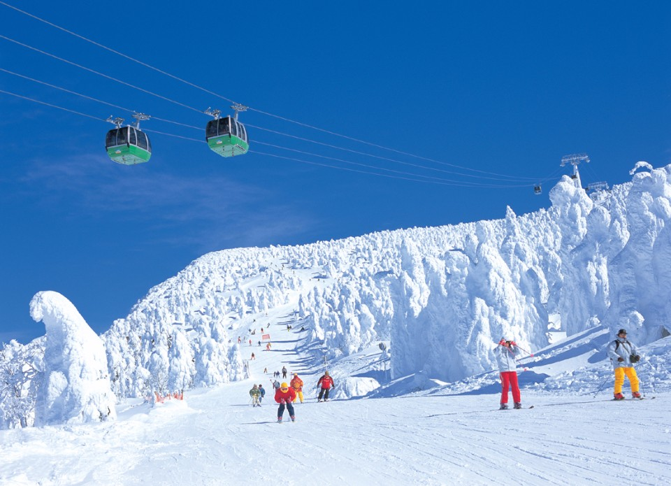
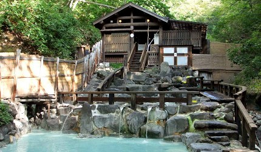
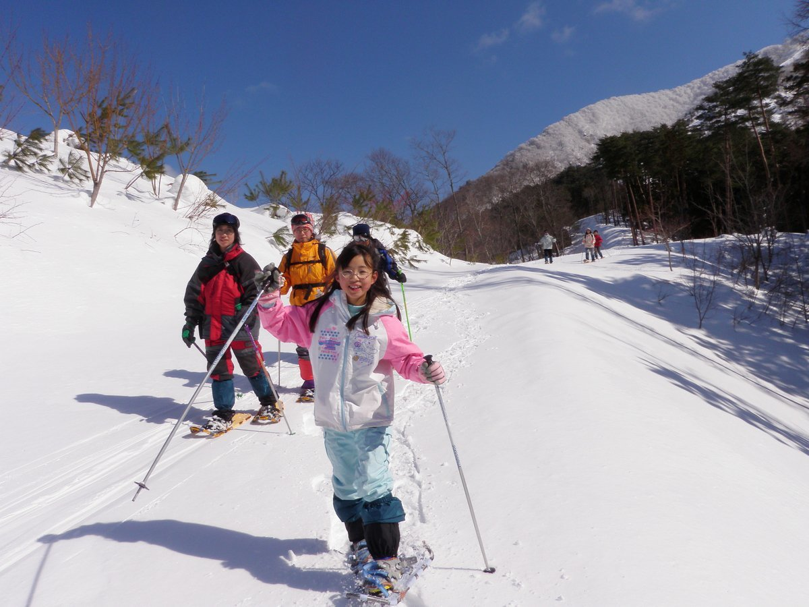
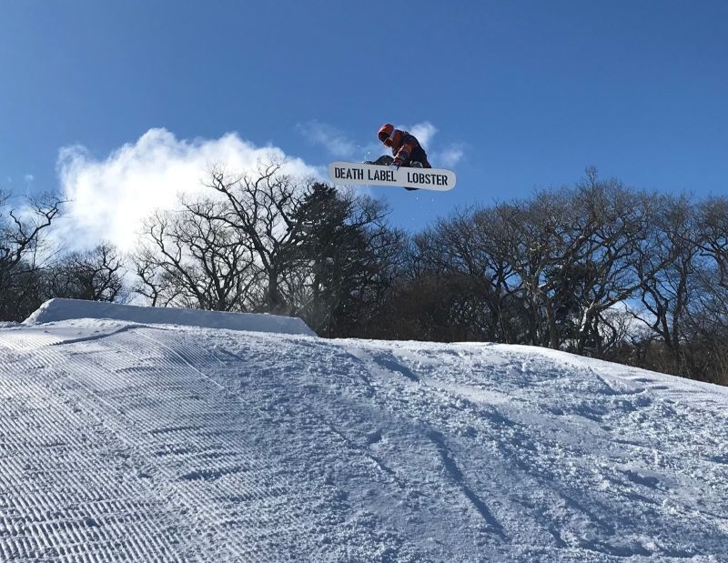

藏王溫泉滑雪場
蔵王温泉スキー場\Tibetan hot spring ski resort
藏王溫泉滑雪場
藏王是橫跨宮城縣與山形縣的廣大區域。著名的「藏王溫泉滑雪場」（蔵王温泉スキー場）位在海拔1,841公尺的藏王連峰山麓，有26條變化豐富的雪道。不過，藏王地區十分遼闊，因此還有其他充滿個性的滑雪場，像是擁有許多適合初學者雪道的「宮城藏王黑帽子度假村」（みやぎ蔵王えぼしリゾート）等。藏王地區也可體驗樹冰與溫泉，因此可以先從雪道種類與滑雪場規模等，選擇適合自己程度的滑雪場開始，創造最佳的冬季回憶。 在藏王也可以看到全日本罕見的「樹冰」，「樹冰」是空氣中的水滴在周邊樹木結冰形成的，聳立的巨大身影有「雪怪」之稱。此外，藏王也以優異的雪質，滑雪場周邊的溫泉與景點而知名。
藏王溫泉滑雪場動推薦
藏王溫泉
 藏王也以縣內最古老的「藏王溫泉」著稱，可當日往返泡湯的溫泉設施很充實，有可容納200人的寬敞「藏王溫泉大露天風呂」，也有提供私人湯屋，可享有隱私空間的「最上高湯 善七乃湯」等。滑雪流汗之後，眺望整片霧淞群泡溫泉，是一大享受！造訪藏王，一定不能錯過藏王溫泉。
宮城藏王黑帽子度假村、宮城藏王七宿滑雪場
 「宮城藏王黑帽子度假村」（みやぎ蔵王えぼしリゾート），適合推薦給滑雪初學者。10條雪道當中，有7條是適合初學者的雪道。山坡斜度和緩，雪道也很寬敞，無須害怕速度過快，即使是不習慣滑雪的人，也能安心滑雪。滑雪場最上方的「Dynamic雪道」（ダイナミックコース）平均斜度10度，幾乎接近平地，最長可滑行4,300公尺遠的距離。 「宮城藏王七宿滑雪場」（みやぎ蔵王七ヶ宿スキー場）也很受家庭滑雪客喜愛，1條雪道的距離雖然短，不過有很多較寬廣的緩坡，即使是初學滑雪的人也能安心滑行，因而很受好評。滑雪場上四處都有該滑雪場員工手工製作的動物主題雪人，及雪國自古以來為了祭祀神明而製作的「雪屋」（かまくら）等，可以拍攝記念照或是全家一起玩雪。
宮城藏王澄川冰雪公園
 「宮城藏王澄川冰雪公園」（みやぎ蔵王スキー場 すみかわスノーパーク）位在藏王連峰山腰位置，「SUMIKAWA」與「ATOMI」2座滑雪場上，有山坡斜度和緩，長3,000公尺的「觀光行程雪道」，及可充分體驗鬆軟粉雪的「ATOMI A雪道」等種類豐富的8種雪道。 除了在雪道上滑雪之外，也提供各式各樣的活動，譬如在平常無法進入的雪道上散步的「雪地健行」，或是近距離觀賞樹冰的「雪上車行程」等。披覆白雪的山巒，壯觀的樹冰，萬里無雲的藍天，形成極美的對比，只要看過一次就終生難忘。